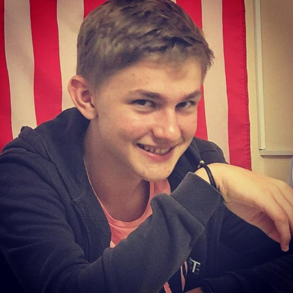
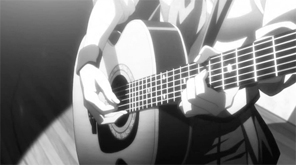

Click pentru muzica

Hey, salut numele meu este Plop Constantin, bine ati venit in universul meu,in excursia de azi va invit sa ma descoperiti pe mine, sa vedeti care sunt visele mele si cine este cu adevarat Plop Constantin. Fara multe introduceri va propun sa incepem.
M-am nascut la data de 3 iunie 2004 Republica Moldova. De mic copil imi plac sa practic sporturile si o mare pasiune a mea a fost muzica. Am finalizat cu succes scoala de muzica avind instrumentul de baza pianul insa pasiunea mea pentru muzica nu se rezuma doar la pian. Un alt instrument care il minuesc cu dibacie este ghitara. Miam dorit Foarte mult sa am o ghitara asa ca parintii miau cadonat una si nu cred ca au regretat o singura secunda alegerea lor. La moment sunt elev in clasa 11-B Liceul Teoretic "Dante Alighieri" iar marele meu vis dupa finalizarea studiilor liceale este sa ajung student la universitatea de medicina Iasi.

| Denumirea Hobbyului | Caracterizare generala | link video |
|---|---|---|
| Muzica | Arta de a exprima sentimente si idei cu ajutorul sunetelor combinate într-o maniera specifica. | Muzica |
| Sportul | Un sport reprezinta o activitate de natura fizica ce poate implica si competitia. Totodata, sportul este o activitate care influenteaza stilul de viata, sanatatea sau personalitatea unui om. | Sport |
| Arta | Arta este, in esenta, cea mai profunda expresie a creativitatii umane. Pe cat de dificil de definit, pe atat de dificil de evaluat, avand in vedere faptul ca fiecare artist isi alege singur regulile si parametrii de lucru. | Arte |